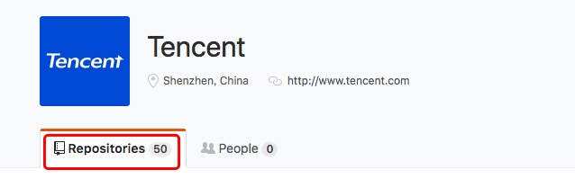
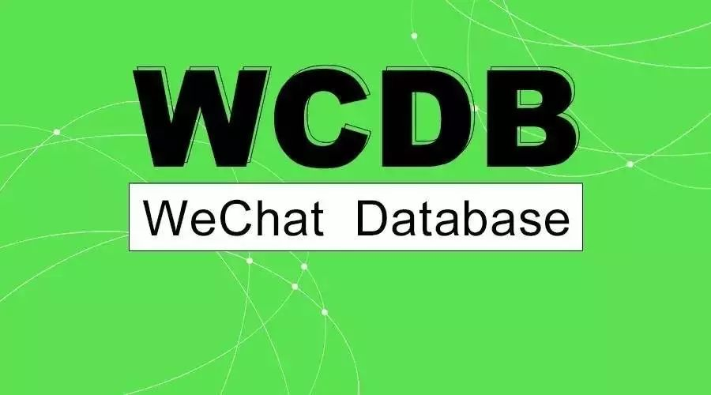
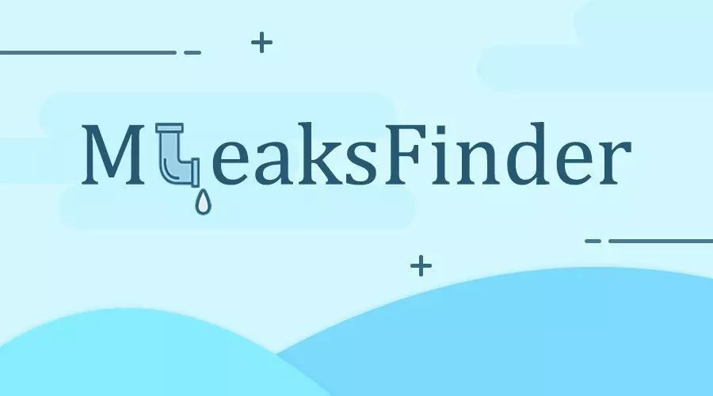
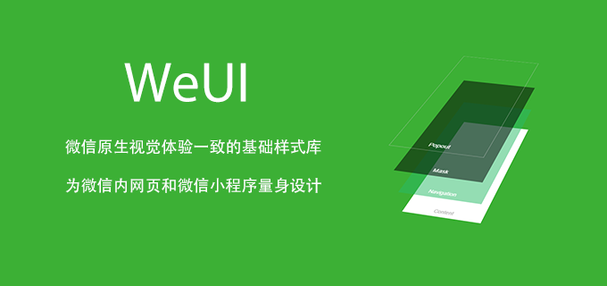

腾讯がオープンソース化しているプロジェクトはかなり多く、Github(https://github.com/Tencent) 上でオープンソース化されているプロジェクトは50個あります。

1、Android ホットフィックスフレームワーク Tinker
Tinker は WeChat 公式の Android ホットフィックスソリューションです。コード、Soライブラリ、リソースの動的配信をサポートし、アプリを再インストールせずに更新できるようにします。もちろん、Tinker を使ってプラグインを更新することもできます。
それは主に以下の部分から構成されています。
- gradle编译插件: tinker-patch-gradle-plugin
- 核心sdk库: tinker-android-lib
- 非gradleコンパイルユーザー向けコマンドラインバージョン: tinker-patch-cli.jar
源码地址：https://github.com/Tencent/tinker
文档地址：https://github.com/Tencent/tinker/wiki

2、微信クライアント向けクロスプラットフォームコンポーネント Mars
Mars は微信公式の端末基盤コンポーネントであり、ビジネス非依存・プラットフォーム非依存で、C++ で書かれた基盤コンポーネントです。現在は微信 Android、iOS、Mac、Windows、WP、UWP などのクライアントに導入されています。注意：現在はAndroid、iOS、Mac、Windows プラットフォームのみサポートしており、他のプラットフォームは今後のバージョンでまもなくサポートされる予定です。
それは主に以下の部分から構成されています。
- Comm：基本ライブラリ。socket、スレッド、メッセージキュー、コルーチンなどの基本ツールを含みます。
- Xlog：汎用ログモジュール。モバイル端末の特性を十分に考慮し、高性能・高可用性・安全性・フォールトトレランスを備えたログ機能を提供します。
- SDT：ネットワーク診断モジュール；
- STN：シグナリング伝送ネットワークモジュール。端末とサーバー間の小データシグナリングチャネルを担当します。微信端末におけるモバイルネットワーク上の数多くの最適化経験と成果が含まれており、微信の膨大なユーザーによる検証を経ています。
源码地址：https://github.com/Tencent/mars
文档地址：https://github.com/Tencent/mars/wiki

3、ミニプログラムのコンポーネント化開発フレームワーク wepy
WePY はミニプログラムにコンポーネント化開発をサポートさせるフレームワークです。プリコンパイルの手法により、開発者は自分の好みの開発スタイルを選んでミニプログラムを開発できます。フレームワークの細部の最適化、Promise、Async Functions の導入はすべて、ミニプログラム開発プロジェクトをより簡単で効率的にするためのものです。
WePY フレームワークは開発過程で Vue などの既存フレームワークの一部の構文スタイルと機能特性を参考にし、ネイティブミニプログラムの開発モードを再ラップしています。MVVM アーキテクチャパターンにより近く、ES6/7 の新しい特性の一部もサポートしています。
源码地址：https://github.com/Tencent/wepy
WePY 主页：https://tencent.github.io/wepy/
文档地址：https://tencent.github.io/wepy/document.html#/
WePY リソースまとめ：https://github.com/aben1188/awesome-wepy

4、軽量かつ高性能な Hybrid フレームワーク VasSonic
VasSonic は、セガのゲームキャラクター「ソニック」に由来する名前で、テンセントVAS（SNG付加価値製品部QQ会員）チームが開発した軽量で高性能なHybridフレームワークです。ページのファーストビュー読み込み速度の向上に特化しており、静的直出しページと動的直出しページを完全にサポートし、オフラインパッケージなどの方式にも対応しています。
現在、QQ会員、QQゲームセンター、QQパーソナライズモール、QQショッピング、QQウォレット、ペンギンeスポーツなどのサービスで使用されており、1日の平均PVは1.2億以上（モバイルQQ内のデータのみの統計）、ページのファーストビュー平均所要時間は1秒以下です。
源码地址：https://github.com/Tencent/VasSonic
文档地址：https://github.com/Tencent/VasSonic/wiki
| 図1: Sonicモード使用前 | 図2: Sonicモード使用後 |
|---|---|
 |
 |
5、微信チームのフロントエンド開発ツール WeFlow
WeFlow は、効率ので、強力で、クロスプラットフォームのフロントエンド開発ワークフローツールです。現在、WeChatゲーム、WeChatモーメンツ広告、WeChat都市サービスなどのプロジェクトの第三者協力チームのフロントエンド構築作業をサポートしています。コマンドライン操作に慣れている場合は、WeFlowのコアであるGulpベースのtmt-workflow :)を直接使用できます。
源码地址：https://github.com/Tencent/WeFlow

6、モバイルデータベースフレームワーク WCDB
WCDBは、効率ので完全かつ使いやすいモバイルデータベースフレームワークであり、SQLCipherに基づき、iOS、macOS、Androidをサポートしています。基本特性：
- 使いやすさ：WCDBは1行のコードでデータを取り出し、objectに組み合わせることをサポートします。
- 高効率：WCDBはフレームワーク層とsqlcipherソースコードの最適化により、より高いパフォーマンスを発揮します。
- 完全であり、WCDB はデータベース関連のさまざまなシナリオに必要な機能を網羅しています。
源码地址：https://github.com/Tencent/wcdb
文档地址：https://github.com/Tencent/wcdb/wiki

7、パラメータサーバーの概念に基づく機械学習フレームワーク Angel
Angel はパラメータサーバー（Parameter Server）の概念に基づいて開発された高性能な分散機械学習プラットフォームです。腾讯内部の膨大なデータに基づいて繰り返しチューニングが行われており、幅広い適用性と安定性を備えています。モデルの次元が高いほど、その優位性は顕著になります。Angel は腾讯と北京大学の共同開発であり、業界の高可用性と学界の革新性を兼ね備えています。
Angel のコアデザイン理念はモデルを中心としています。高次元の大規模モデルを複数のパラメータサーバーノードに合理的に分割し、効率的なモデル更新インターフェースと演算関数、および柔軟な同期プロトコルを通じて、さまざまな効率的な機械学習アルゴリズムを容易に実現します。
Angel は Java と Scala に基づいて開発されており、コミュニティの Yarn 上で直接スケジューリング・実行できます。また、PS Service に基づいて Spark on Angel をサポートし、将来はグラフ計算とディープラーニングフレームワークの統合をサポートする予定です。
源码地址：https://github.com/Tencent/angel
文档地址：https://github.com/Tencent/angel
8、自動メモリリーク検出ツール MLeaksFinder
MLeaksFinder はテンセントがオープンソース化した iOS プラットフォーム向けの自動メモリリーク検出ツールです。MLeaksFinder を導入すれば、日常の開発やビジネスロジックのデバッグ過程でメモリリークを自動的に検出し、警告することができます。
開発者は instrument などの追加ツールを開く必要がなく、メモリリークを見つけるために余分なプロセスを実行する必要もありません。さらに、開発者はコードを修正した後、関連するビジネスロジックを実行するだけでメモリリークを発見できるため、どこでコードに問題があるかをすぐに把握できます。この迅速なメモリリークの発見により、メモリリーク修正のコストを大幅に削減できます。
以下の特性を持つ：
- メモリリークおよび解放が遅れるシナリオを自動検出します
- リークオブジェクトの ViewContrller に対する参照チェーンを構築し、開発者の問題特定を支援します。
- ビジネスロジックに侵入せず、導入するとすぐに有効になり、コードを変更したりヘッダーファイルをインクルードしたりする必要はありません
源码地址：https://github.com/Tencent/MLeaksFinder
WeReadチームブログ：http://wereadteam.github.io/

9、UI 库 WeUI
WeUI は微信公式デザインチームが微信モバイル Web アプリケーション専用に設計した UI ライブラリです。WeUI は微信のネイティブな視覚体験と一致する基本スタイルライブラリであり、微信 Web 開発のために特別に設計されています。ユーザーの使用感をより統一することができます。button、cell、dialog、toast、article、icon などのさまざまな要素が含まれています。源码地址：https://github.com/Tencent/weui
文档地址：https://github.com/Tencent/weui/wiki
ミニプログラム版ソースコード：https://github.com/Tencent/weui-wxss/
オンライン例：https://weui.io/

10、分散バックエンドサービスエンジン MSEC
ミリ秒サービスエンジン（MSEC）は腾讯 QQ チームによってオープンソース化されました。これはバックエンドの DEV&OPS エンジンであり、RPC、ネームルックアップ、負荷分散、監視、リリース、キャパシティ管理を含みます。ミリ秒サービスエンジンの特徴：
- モジュール間のアクセスは RPC 方式を採用しており、開発者はネットワークとメッセージ形式を気にする必要がなく、スタンドアロンプログラムを作成するかのように分散サービスを開発できます。
- 負荷の自動分散とフォールトトレランス：単一マシンの障害や部分的なネットワーク変動などの状況に自動的に対応し、サービスの高可用性を実現します。
- C/C++/java/PHP 言語をサポートしています。C/C++ 言語を選択した場合、コルーチンをサポートし、開発効率と実行効率の両方を兼ね備えています。
- Web 化された管理インターフェース。
- 簡単なデプロイ：複雑なデプロイが必要なサーバーもすべて Docker イメージ方式でインストールします。
- 他のオープンソースコンポーネントを寄せ集めて作ったソリューションと比較して、ミリ秒サービスエンジンはより体系化されており、チームの標準化もより徹底しています。
源码地址：https://github.com/Tencent/MSEC
官方地址：http://msec.qq.com/